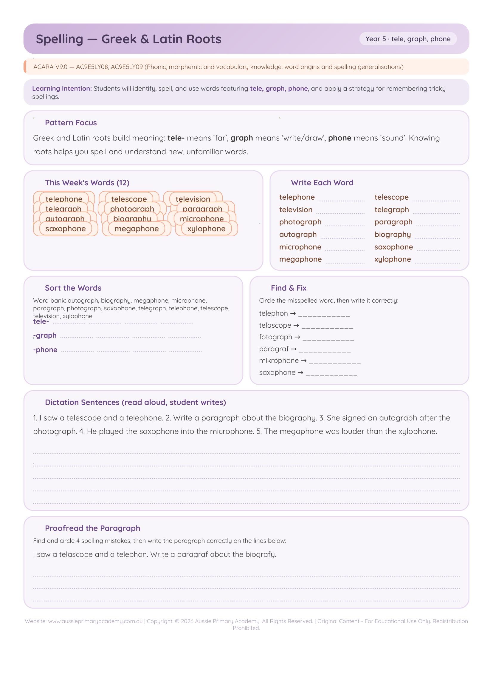

Year 5 · English · Spelling · Free Printable
Greek & Latin Roots
Practise spelling and understanding words built from common Greek and Latin roots.
Worksheet Preview

Learning Intention
Students will identify common Greek and Latin roots and use them to spell and understand new words.
Australian Curriculum
Supports Year 5 English literacy and spelling learning (AC9E5LY10).
Teacher Notes
Teach root meaning first (e.g. spect = look). Build word families from each root.
Skills Practised
- Greek & Latin roots
- Morphology
- Vocabulary building
- Spelling patterns
About This Worksheet
Understanding common Greek and Latin roots can help students unpack unfamiliar words. A root often carries a useful part of a word's meaning, giving students a strategy for vocabulary growth as well as spelling.
What Students Practise
Students identify roots, connect a root with its meaning and use that knowledge when reading or spelling related words. For example, spect relates to looking, as in inspect and spectator.
How to Use It
Introduce the root meaning before students begin. Build a small word family together and discuss what the words have in common. Then use the worksheet for independent practice and ask students to explain how the root helped them.
Teacher Tip
Keep a class root-word display and add new examples as students encounter them in reading. Ask students to highlight the shared root so the connection between spelling, meaning and vocabulary stays visible.